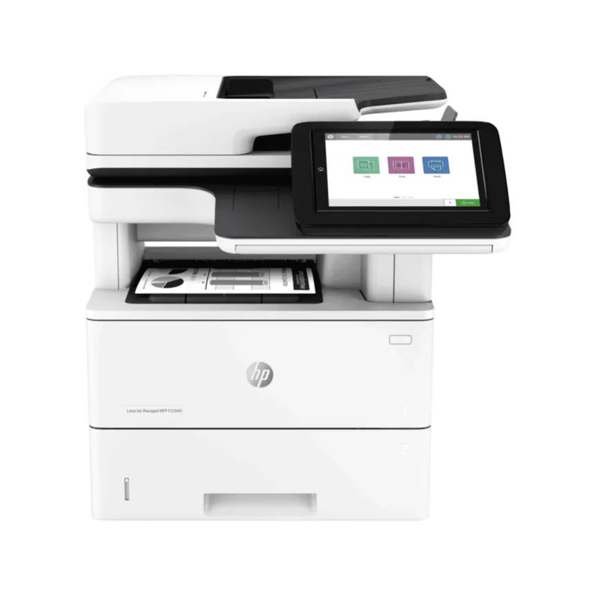
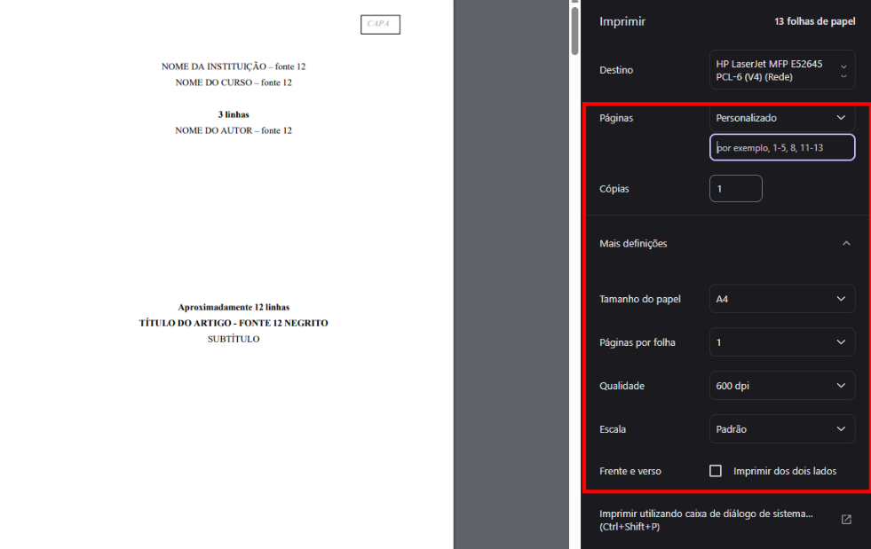
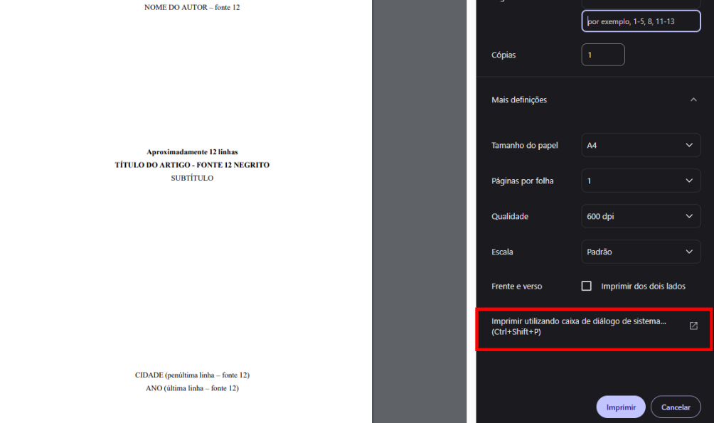
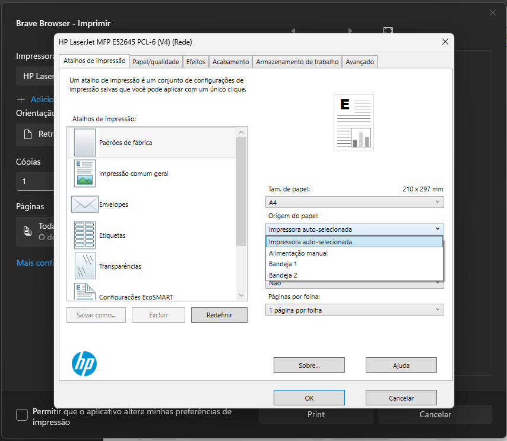
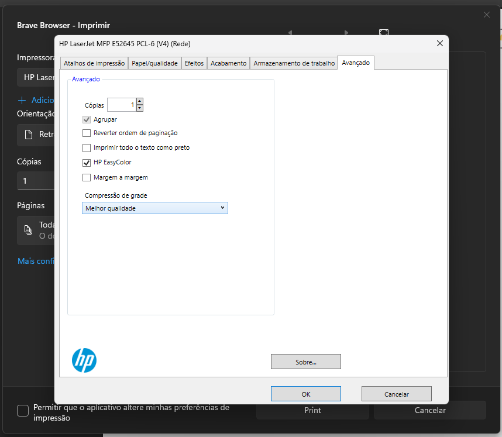

Tutorial
HP LaserJet MFP E52645
Impressão com acesso rápido a papel, bandeja, agrupamento e qualidade.
1
Selecionar a impressora
Abra a janela de impressão e escolha a HP E52645.


2
Abrir configurações detalhadas
Ajuste páginas e papel A4, depois use a caixa de diálogo do sistema.



3
Papel, agrupamento e qualidade
Marque Agrupar para manter as cópias na ordem correta.
Defina bandeja de origem e melhor qualidade quando necessário.
